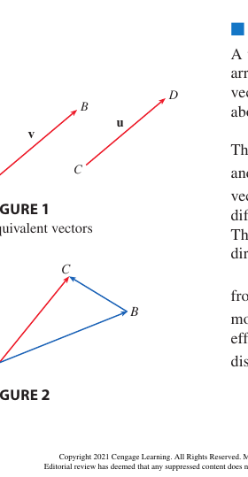
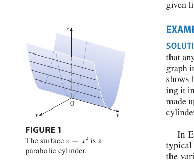

Chapter 12 · Vectors and the Geometry of Space
Geometry in space. Vectors, the dot and cross products, lines and planes, and the six quadric surfaces sorted by their traces. The dot product measures alignment and the cross product builds a perpendicular, and almost every distance and angle here is one of those two readings in disguise.
12.1 Three-Dimensional Coordinate Systems
The coordinate planes $xy$, $yz$, $zx$ split $\mathbb R^3$ into eight octants, labelled by the signs of $(x, y, z)$. The first is $(+,+,+)$.
3DDistance between $P_1 = (x_1, y_1, z_1)$ and $P_2 = (x_2, y_2, z_2)$.
Why. Pythagoras applied twice. The diagonal across the floor has length $\sqrt{\Delta x^2 + \Delta y^2}$, and that diagonal together with the vertical rise $\Delta z$ forms a second right triangle. The figure shows both steps on a unit cube, where the floor diagonal is $\sqrt 2$ and the space diagonal is $\sqrt 3$.
Sphere of radius $r$ centred at $(h, k, \ell)$.
A sphere is the set of points at distance $r$ from the centre, so this is the distance formula squared.
12.2 Vectors
3DA vector $\vec a = \langle a_1, a_2, a_3\rangle$ has magnitude and direction. The magnitude is
Operations work component by component.
Unit vector. If $\vec a \ne \vec 0$, then $\hat{\vec a} = \vec a / |\vec a|$ has length 1.
Standard basis. $\hat\imath = \langle 1, 0, 0\rangle,\ \hat\jmath = \langle 0, 1, 0\rangle,\ \hat k = \langle 0, 0, 1\rangle$, and $\vec a = a_1\hat\imath + a_2\hat\jmath + a_3\hat k$.

12.3 The Dot Product
1D in 3DIntro. The dot product turns two vectors into one number that measures how much they line up.
where $\theta \in [0, \pi]$ is the angle between the two vectors. The two expressions agree by the law of cosines applied to the triangle with sides $\vec a$, $\vec b$, $\vec a - \vec b$. Expanding the squared lengths in components cancels everything except $a_1 b_1 + a_2 b_2 + a_3 b_3 = |\vec a||\vec b|\cos\theta$.
Intuition. Shine a light perpendicular to $\vec a$ onto $\vec b$ and the shadow has signed length $|\vec b|\cos\theta$, the scalar projection $\mathrm{comp}_{\vec a}\vec b$. Multiplying by $|\vec a|$ gives the dot product, so $\vec a \cdot \vec b$ says how much of $\vec b$ lies along $\vec a$, scaled by $|\vec a|$. Perpendicular vectors cast no shadow and give zero. Parallel ones give $\pm |\vec a||\vec b|$.
Orthogonality. $\vec a \perp \vec b \iff \vec a \cdot \vec b = 0$.
Direction angles / cosines. $\cos\alpha = a_1/|\vec a|$, $\cos\beta = a_2/|\vec a|$, $\cos\gamma = a_3/|\vec a|$, and $\cos^2\alpha + \cos^2\beta + \cos^2\gamma = 1$.
Scalar projection of $\vec b$ on $\vec a$ is $\;\mathrm{comp}_{\vec a}\vec b = \dfrac{\vec a \cdot \vec b}{|\vec a|}.$
Vector projection. $\;\mathrm{proj}_{\vec a}\vec b = \dfrac{\vec a \cdot \vec b}{|\vec a|^2}\,\vec a.$
Work. If a constant force $\vec F$ moves an object through displacement $\vec D$, the work done is $W = \vec F \cdot \vec D = |\vec F||\vec D|\cos\theta$.
12.4 The Cross Product
2D in 3DIntro. The cross product turns two vectors into a third one perpendicular to both, with length equal to the area they span.
Properties.
- $\vec a \times \vec b$ is perpendicular to both $\vec a$ and $\vec b$ (right-hand rule for direction).
- $|\vec a \times \vec b| = |\vec a||\vec b|\sin\theta$, the area of the parallelogram with sides $\vec a$ and $\vec b$.
- $\vec a \parallel \vec b \iff \vec a \times \vec b = \vec 0$.
- $\vec a \times \vec b = -\vec b \times \vec a$ (anticommutative).
Why the length is an area. Take $\vec a$ as the base of the parallelogram. The height is the component of $\vec b$ perpendicular to the base, $|\vec b|\sin\theta$, so base times height is $|\vec a||\vec b|\sin\theta$. Parallel vectors span no area, which is why their cross product is $\vec 0$.
Scalar triple product. $\vec a \cdot (\vec b \times \vec c)$ is the determinant of the $3 \times 3$ matrix with rows $\vec a, \vec b, \vec c$. Its absolute value is the volume of the parallelepiped they span, base times height again. $\vec b \times \vec c$ has the base area as its length and points perpendicular to the base, so the dot with $\vec a$ multiplies that area by the height of $\vec a$ above the base. The triangle with sides $\vec a$ and $\vec b$ has area $\tfrac12 |\vec a \times \vec b|$.
Scalar versus vector. $\vec a\cdot\vec b$ is a number and $\vec a\times\vec b$ is a vector. In the triple product $\vec a\cdot(\vec b\times\vec c)$ the cross product must be evaluated first, so the parentheses are essential. The grouping $(\vec a\cdot\vec b)\times\vec c$ is meaningless, since you cannot cross a scalar with a vector.
Torque. $\vec\tau = \vec r \times \vec F$, magnitude $|\vec r||\vec F|\sin\theta$, force times moment arm.
12.5 Equations of Lines and Planes
1D in 3DLine through $P_0 = (x_0, y_0, z_0)$ with direction $\vec v = \langle a, b, c\rangle$.
Parametric form. $x = x_0 + at,\ y = y_0 + bt,\ z = z_0 + ct$.
Symmetric form. $\dfrac{x - x_0}{a} = \dfrac{y - y_0}{b} = \dfrac{z - z_0}{c}.$
All three describe the same motion, starting at $P_0$ with velocity $\vec v$. The symmetric form is each parametric equation solved for $t$.
A zero in a direction component. You cannot divide by it. For direction $\vec v=\langle 3,0,-2\rangle$ through $(2,-1,4)$ the symmetric form is $\dfrac{x-2}{3}=\dfrac{z-4}{-2},\ \ y=-1$. Write the zero-slot variable as its own constant equation instead of putting $0$ in a denominator.
Skew lines are non-parallel and non-intersecting, which only happens in $\mathbb R^3$. Two lines in the plane must cross or be parallel, but in space one can pass over the other.
Parallel, intersecting, or skew. Two lines are parallel exactly when their direction vectors are scalar multiples. If the directions are not parallel, set the two parametrizations equal and solve. A consistent solution gives the intersection point, an inconsistent system means the lines are skew. Parallel directions together with a shared point mean the lines coincide.
2D in 3DPlane through $P_0$ with normal $\vec n = \langle a, b, c\rangle$.
Why. A point $\vec r$ lies in the plane exactly when the displacement from $\vec r_0$ to it is perpendicular to the normal, and the dot product tests exactly that. The coordinate version is the same dot product expanded.
Distance from a point $P$ to a plane. Pick any $Q_0$ on the plane. The distance is the projection of $\overrightarrow{Q_0 P}$ onto the unit normal $\hat{\vec n}$.
Angle between planes equals the angle between their normals, because turning a plane turns its normal by the same amount.
Distance from $P$ to a line through $Q$ with direction $\vec v$, once with each product. The dot product splits $\overrightarrow{QP}$ into components along and across the line, and the across component is the distance. The cross product gives the area of the parallelogram spanned by $\overrightarrow{QP}$ and $\vec v$, whose base is $|\vec v|$ and whose height is the distance.
Method 2. $D = \dfrac{|\overrightarrow{QP} \times \vec v|}{|\vec v|}$.
12.6 Quadric Surfaces
2D in 3DIdentify a quadric by its traces. Cut it with planes $x = k$, $y = k$, $z = k$ and read off the plane curve. Do not stop at $k = 0$, since varying $k$ shows how the curve grows or shrinks along that axis. Six standard shapes turn up.
Ellipsoid. $\tfrac{x^2}{a^2} + \tfrac{y^2}{b^2} + \tfrac{z^2}{c^2} = 1$. The trace $z = k$ gives $\tfrac{x^2}{a^2} + \tfrac{y^2}{b^2} = 1 - \tfrac{k^2}{c^2}$, an ellipse for $|k| < c$, a single point at $|k| = c$, empty for $|k| > c$.
Elliptic paraboloid. $z = \tfrac{x^2}{a^2} + \tfrac{y^2}{b^2}$. $z = k > 0$ gives the ellipse $\tfrac{x^2}{a^2 k} + \tfrac{y^2}{b^2 k} = 1$, semi-axes proportional to $\sqrt k$. $y = k$ gives the parabola $z = \tfrac{x^2}{a^2} + \tfrac{k^2}{b^2}$, shifted up by $k^2/b^2$.
Hyperbolic paraboloid (saddle). $z = \tfrac{x^2}{a^2} - \tfrac{y^2}{b^2}$. $y = k$ gives an upward parabola $z = \tfrac{x^2}{a^2} - \tfrac{k^2}{b^2}$, $x = k$ a downward one $z = \tfrac{k^2}{a^2} - \tfrac{y^2}{b^2}$, and $z = k$ a hyperbola $\tfrac{x^2}{a^2} - \tfrac{y^2}{b^2} = k$ (the sign of $k$ sets which axis the branches sit along).
Cone. $\tfrac{x^2}{a^2} + \tfrac{y^2}{b^2} = \tfrac{z^2}{c^2}$. $z = k$ gives the ellipse $\tfrac{x^2}{a^2} + \tfrac{y^2}{b^2} = \tfrac{k^2}{c^2}$, growing linearly with $|k|$ and shrinking to a point at $k = 0$. $y = k$ gives the hyperbola $\tfrac{x^2}{a^2} - \tfrac{z^2}{c^2} = -\tfrac{k^2}{b^2}$, which at $k = 0$ degenerates to crossing lines $x = \pm (a/c) z$.
Hyperboloid of one sheet. $\tfrac{x^2}{a^2} + \tfrac{y^2}{b^2} - \tfrac{z^2}{c^2} = 1$. $z = k$ gives the ellipse $\tfrac{x^2}{a^2} + \tfrac{y^2}{b^2} = 1 + \tfrac{k^2}{c^2}$, always present and growing as $|k|\to\infty$. At $z = 0$ it's the waist ellipse $\tfrac{x^2}{a^2} + \tfrac{y^2}{b^2} = 1$. $y = k$ gives a hyperbola. The sweeping plane below traces this, a circle present at every height and smallest at the waist.
Hyperboloid of two sheets. $\tfrac{x^2}{a^2} + \tfrac{y^2}{b^2} - \tfrac{z^2}{c^2} = -1$. $z = k$ gives $\tfrac{x^2}{a^2} + \tfrac{y^2}{b^2} = \tfrac{k^2}{c^2} - 1$, an ellipse for $|k| > c$ and empty for $|k| < c$. The gap is the region between the two cups.
Identification recipe. Compute traces at $z = 0, 1, -1$ and at $x = 0$, $y = 0$. Ellipses everywhere $\Rightarrow$ ellipsoid. One family empty for small $|k|$ but present for large $|k|$ $\Rightarrow$ two-sheet hyperboloid. One family that shrinks to a point then becomes crossing lines $\Rightarrow$ cone. Parabolas in two coordinate-plane traces $\Rightarrow$ paraboloid, elliptic if both open the same way, saddle if opposite.

Worked example
Plane through three points, then distance to a point. Find the plane through $P(1,3,2),\ Q(3,-1,6),\ R(5,2,0)$, then the distance from $S(2, 0, 4)$.
$\overrightarrow{PQ} = \langle 2, -4, 4\rangle$, $\overrightarrow{PR} = \langle 4, -1, -2\rangle$. Normal $\vec n = \overrightarrow{PQ}\times\overrightarrow{PR} = \langle 12, 20, 14\rangle$.
The plane is $12(x-1) + 20(y-3) + 14(z-2) = 0$, that is $6x + 10y + 7z = 50$.
The distance from $S$ is $D = |6(2)+10(0)+7(4)-50|/\sqrt{36+100+49} = |-10|/\sqrt{185} = 10/\sqrt{185}$.
Practice problems
- Find the angle between $\vec u = \langle 1, \sqrt 3\rangle$ and $\vec v = \langle 1, 0\rangle$.
- Determine whether $\vec u = \langle 2, 6, -4\rangle$ and $\vec v = \langle -3, 1, 0\rangle$ are orthogonal, parallel, or neither.
- If $\vec a = \langle 1, 1\rangle$, $\vec b = \langle -1, 2\rangle$, compute $\mathrm{proj}_{\vec a}\vec b$ and $\mathrm{orth}_{\vec a}\vec b$.
- Find the cross product $\vec a \times \vec b$ for $\vec a = \langle 1, 3, -2\rangle$, $\vec b = \langle 2, 1, 1\rangle$.
- Find a unit vector orthogonal to both $\vec u = \langle 1, 1, 0\rangle$ and $\vec v = \langle 0, 1, 1\rangle$.
- Find an equation of the plane through $P(1, 3, 2)$, $Q(3, -1, 6)$, $R(5, 2, 0)$.
- Sketch the surface $z = y^2 - x^2$ and identify the quadric.
More interactive figures
Strategies
Scalar versus vector projection. $\mathrm{comp}_{\vec a}\vec b = (\vec a\cdot\vec b)/|\vec a|$ is a signed length, $\mathrm{proj}_{\vec a}\vec b = \mathrm{comp}_{\vec a}\vec b \cdot \hat{\vec a}$ places it along $\vec a$, and $\mathrm{orth}_{\vec a}\vec b = \vec b - \mathrm{proj}_{\vec a}\vec b$ is perpendicular to $\vec a$.
Plane from three points. Take $\vec n = \overrightarrow{PQ}\times\overrightarrow{PR}$ and use $\vec n\cdot(\vec r - \vec r_P) = 0$.
Line where two planes meet. Direction $\vec n_1 \times \vec n_2$. For a point, solve the two plane equations together, setting $z = 0$ say.
Angle between planes. $\cos\theta = |\vec n_1\cdot\vec n_2|/(|\vec n_1||\vec n_2|)$, the absolute value selecting the acute angle.
Distance from $P$ to a line $\vec r = \vec r_0 + t\vec v$. $D = |\overrightarrow{r_0 P} \times \vec v|/|\vec v|$.
Identifying a quadric by traces. Set $x = 0$, $y = 0$, $z = 0$ in turn. Ellipses in all three give an ellipsoid. Two parabolic traces give a paraboloid, elliptic if they open the same way and hyperbolic if opposite. A cone shows crossing lines through the origin in two traces.
Cylinder convention. If the equation omits a variable, say $z = x^2$, the rulings run parallel to the missing axis.